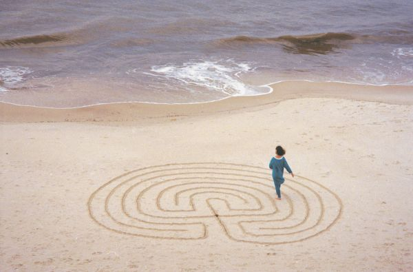
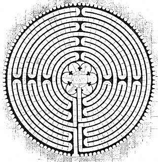

| © 1997 by Melissa Reynolds |
Sacred Labyrinths
I personally am not a part of either of these groups, so you wouldn’t think I’d be interested in labyrinths, yet they fascinate me. One point I want to make is that you don’t have to be on a spiritual quest to be interested in single-path labyrinths. First, some history: In Old Europe, until about 4,000 years ago, our principal gods were all female. We joined various mystery cults centered around various goddesses in order to learn how to live in this world, how to find our way to the next world, and (surprisingly) to learn some practical information like how to grow wheat. Many of these cults had labyrinths, though we can’t be sure what they were used for. They may have just provided a pattern for dancers to follow, but they were probably used to show us symbolically the way to the next world. The best known of these labyrinths is in Crete. It was presided over by Ariadne, who was worshiped in Crete, Naxos and some of the other Greek islands (in her day, all gods were local, as, I think, they should be). It’s probable that there was a ceremony involving the mother-daughter pair of Pasiphaë and Ariadne (similar to the mother-daughter pair of Demeter and Persephone in the cult at Eleusis). Pasiphaë represents the mother who brought you into the world, Ariadne represents the daughter who traces a route through the labyrinth to show you the way to the next world, and then there’s a Minotaur, who represents death. If elements of this ceremony sound familiar, it’s probably because you know the story of the hero Theseus, who ventured into the vast labyrinth, slew the Minotaur, and was able to find his way out by following a thread given to him by his girlfriend Ariadne. Theseus was actually a late addition to this mythology; he was added by the Achaians, a tribe that conquered Greece. They worshiped the male god Zeus, and when they took over, they revised most of the previous mythology. The former goddesses were reassigned secondary roles such as wives of gods or mistresses of Zeus. In Ariadne’s case, she was demoted from goddess to just girlfriend-of-the-hero. Theseus is also the hero who defeated the Amazons, and the misogynist Athenians of the classical period considered that to be his greatest accomplishment. |
|
Single-path labyrinths existed throughout the Greek and Roman era, and later they were incorporated into the Christian church. The greatest of these was a large pavement labyrinth in the Cathedral at Chartres. During the Renaissance, a new invention was built in Italian gardens: the puzzle maze. For the first time there were choices to be made in a maze, and you had to plan your route to the goal. The single-path labyrinth was almost forgotten. The labyrinth at Chartres was covered with chairs, and few visitors even knew it existed. Today, the Christian labyrinth is undergoing a revival. In 1991, Lauren Artress built a replica of the Chartres labyrinth at Grace Cathedral in San Francisco. Labyrinths have now appeared in other churches, mostly Episcopal. For example, in Tequesta, a small town just north of where I live, the Church of the Good Shepherd built a beautiful outdoor pavement labyrinth. |  diagram from Caerdroia Issue 25 |
|
The Bulletin’s cover picture gives an intimation of the excitement a single-path labyrinth can generate. The woman in the picture, the mistress of that particular labyrinth, is Annette Reynolds, and the picture was taken by her daughter, Melissa. Annette is the head of the Labyrinth Project of Alabama. Their site has more about how the picture came about. Also, for general information about labyrinths, a good place to start is the site for Caerdroia magazine. So—why do I personally enjoy labyrinths? Partly because if I see a path, I just have to follow it. I’m not sure why this is. Labyrinths can also be confusing, even though they have only a single path. There’s some sort of topological paradox at work. The path takes you near the center, then back out to the edge, then repeats this in-and-out pattern before you finally reach the goal. If you have a diagram of a labyrinth, you can figure out when the path would take you to the center and when it would take you out to the edge. But as you walk a labyrinth, you become hopelessly lost. Even if you pay close attention, you won’t understand how you got where you are nor can you say where you will go next—and that’s sort of the point. You’re not supposed to pay attention. You’re supposed to let the labyrinth take you where it will. The September, 2000 Mensa Bulletin had the following letter-to-the-editor along with my response:
Glass ceiling for goddessesRobert Abbott presents some interesting information on “sacred labyrinths” (June) but unfortunately includes some misinformation as well. He says that “In Old Europe, until about 4,000 years ago, our principal gods were all female.” When the Achaeans conquered Greece, “They worshiped the male god Zeus, and when they took over, they revised most of the previous mythology. The former goddesses were reassigned secondary roles.” This is a trendy claim that’s often made in New Age and feminist circles, but that doesn’t make it true. Indeed, this “goddess” stuff is rejected by virtually all professional scholars whose field of expertise lies within the supposed goddesses’ realms. A good refutation to uncritical “age of the goddess” claims is Goddess Unmasked, by Philip.G. Davis (Spence, 1998). If you go to my Web site (www.debunker.com) and search on the word “goddess” you’ll find many more detailed refutations.
Robert Sheaffer
I had previously read Robert Sheaffer’s review of Goddess Unmasked in Skeptical Inquirer, and found it to be interesting. However, he is attacking the wrong thing in my article. There is no question that the old gods of Europe were female. Where scholars disagree is whether this represents a golden age or not, whether there ever were matriarchal societies, whether Amazons or Gorgons actually existed. I didn’t get into these questions in my article. Maybe it wasn’t a golden age. After all, they did sacrifice one of us guys every year or so. But the record for male gods has been bad, to say the least. Most of the world today worships the male god Jehovah, and countless wars have been fought over the proper form of this worship. During the Dark Ages the worshipers of this male god killed millions of women in their frenzy over witchcraft. The Moslems worship this male god under the name Allah, and they keep their women in slavery. Recently the Baptists, other worshipers of this god, voted to make their women subservient to their men. I suspect they won’t have much luck in this endeavor. |
|
After our letters appeared in Mensa Bulletin, Robert Sheaffer and I continued our correspondesce by e-mail, as shown below. These letters did not appear in Mensa Bulletin.
I added your letter to the version of the Sacred Labyrinths article that is on my web site (www.logicmazes.com). I also added a pointer to your site.
Thanks for your note.
While everyone agrees, I think, that goddesses were worshipped of old, what is controversial is the claim that ONLY goddesses were worshipped. Since no contemporary writings exist that describe these ancient religions, their religious practices are largely a matter of conjecture. The problems with equating images and artifacts to "goddesses" are summarized very nicely by Hutton (see excerpts here); it's really a very naive "leap of faith," because so many other interpretations are possible. To boldly call these "goddesses" is to jump much, much farther than the data will allow.
Is there any solid foundation to the claim that Ariadne was a "goddess" who later got demoted to "princess," or is this just the conjecture of some latter-day Goddess advocate?
On the subject of goddess worship, I'm more a journalist than a scholar, so I shouldn't be held to too high a standard. Most of what I know I picked up from an ex-wife (who's currently a professor at Rutgers) or I got from books I browsed at Barnes & Noble but didn't buy. However, here are my sources for Ariadne as a goddess: She is in Robert Graves' book "The White Goddess." Graves says she even went on to become a goddess of the Celts, but I haven't seen anyone else say that. A better source is the book "Dionysus." I don't know the author because it's one of the books I didn't buy. But this book has a long account of Ariadne as a goddess. And of course Ariadne became a co-god in the Dionysus cult.
I'm sure there were tribes in Old Europe that worshiped males. But there are tricky parts to this whole subject. For example, is the Virgin Mary a goddess? She isn't in official Catholic mythology, but she is the one that most Catholics pray to.
As for Graves as a serious historian, P.G. Davis shows quite clearly that he is not (see pp. 291-93). I won't try to give you a long quote, but Davis summarizes it like this: "Most expert interpreters of Graves consider "The White Goddess" to be an extended metaphor, and claim that the real subject at issue is not the actual history of Western civilization but Graves' wrestling with his own muse." One of Graves' "historical sources" is Lady Charlotte Guest's collection of Welsh legends, "The Mahinogion," which is in turn based upon a made-up Celtic legend-book by Edward Williams (who called himself Iolo Morgannwg). So, serious history this stuff AIN'T. It's as if somebody wrote a book on U.S. history that included the Paul Bunyan and Rip Van Winkle stories as real events.
Of course I don't know your ex-wife or what she is a professor of, but I do know that feminist academics tend to be extremely "Fantasy Prone" on the Goddess business. If you want accurate and serious history, you need to consult "real historians", i.e. writings by professors in the history department. If you want serious archaeology, same thing. "Women's studies" promotes deliberate misinformation for political ends, and must not be confused with serious history, science, sociology, etc. That's why they have "a department of their own," where they don't have to worry about peer review from logical scholars of either sex. If somebody tried to teach legend as history in the history department, they'd run into all kinds of opposition. But if it's taught as "Women's Studies," nobody dares to criticise it, even though most of them realize the the Empress has no Clothes.
Technically, Mary of course isn't a "goddess," but she obviously serves that same purpose. Just as a sitcom with no female characters would fall dead last in the ratings, religious "screenwriters" do what they have to in order to keep up the 'human interest' angle.
Oh, okay. I think I'm losing this argument.
Could I add your latest e-mail to my web site?
Sure, you can use that email, and the paragraphs following this one, if you'd like. You might possibly want to edit out any comments referring to individuals (like your ex-wife), but the factual stuff and quotes are just fine.
Moving on to your claim that "millions" of European women were supposedly burned as witches, perhaps you missed the following excerpt from my website:
In "Witches and Neighbors: The Social and Cultural Context of European Witchcraft" (Viking, 1996), Oxford professor Robin Briggs writes, "Historical European witchcraft is quite simply a fiction, in the sense that there is no evidence that witches existed, still less that they celebrated black masses or worshiped strange gods... On the wilder shores of the feminist and witch-cult movements a potent myth has become established, to the effect that 9 million women were burned as witches in Europe, gendercide rather than genocide. This is an overestimate by a factor of up to 200, for the most reasonable modern estimates suggest perhaps 100,000 trials between 1450 and 1750, with something between 40,000 and 50,000 executions, of which 20-25% were men."
As I said, feminists, even "academic feminists," have never been known to let mere facts stand in the way of a good story.
Does anyone have more to add to this discussion? If so, send me an e-mail at this address: |
|
Yes! Someone did have more to add to the discussion. This is very interesting: 20 Dec 2000 from Ron Hale-Evans to Robert Abbott: You asked for further comment on the "Sacred Labyrinths" discussion. I share the concern you and Robert Sheaffer have about the excesses of Women's Studies "scholars" and their gross inflation of the death toll for the medieval witch hunts, etc. (this despite the fact that I sometimes consider myself Pagan). However, there are at least two errors of fact in what Sheaffer told you. He writes, "One of Graves' 'historical sources' is Lady Charlotte Guest's collection of Welsh legends, 'The Mahinogion,' which is in turn based upon a made-up Celtic legend-book by Edward Williams (who called himself Iolo Morgannwg). So, serious history this stuff AIN'T. It's as if somebody wrote a book on U.S. history that included the Paul Bunyan and Rip Van Winkle stories as real events." First of all, the book is called The Mabinogion, and not The Mahinogion. Secondly, it is not "based upon a made-up Celtic legend-book by Edward Williams." The main part of The Mabinogion, called "The Four Branches," dates from the 11th century, and probably derives from much earlier oral sources. I myself read parts of "The Four Branches" in the original Middle Welsh when I was at Yale. Unless someone took the trouble to translate the "made-up Celtic legend-book by Edward Williams" backwards into medieval Welsh, and do it well enough to fool contemporary scholars, a fair chunk of The Mabinogion is genuine medieval legend. For corroborating detail, see this Britannica article. My field of expertise is not archaeology or ancient languages, but these blatant errors caught my eye. What other errors is Sheaffer propounding?
Ron Hale-Evans p.s. I have the first edition of Abbott's New Card Games. My wife and I are very fond of a good fierce game of Leopard. Thanks to Zillions of Games, I now have an Ultima opponent, and I hope to get my Seattle game group interested in New Eleusis, which I played when I lived in Boston. Robert Sheaffer provided the following reply on 25 Dec 2000: Hi, Robert. Well, the info I gave you earlier came directly from Philip G. Davis' "Goddess Unmasked," page 229. Davis says of Iolo Morgannwg (a.k.a. Edward Williams, 1747-1826): "Drawing on some authentic materials, Williams essentially fabricated an entire system of philosophy and ritual which he attributed to the Druids.... This work was often mistaken for the real thing, and it was incorporated into the most famous of Welsh epics, Lady Charlotte Guest's 1849 publication of The Mabinogion." (I plead guilty to having mis-typed that name in my earlier email.) I notice that the Brittanica article to which Mr. Hale-Evan refers does not mention Lady Guest. I think what Davis is suggesting is that what Lady Guest did was to mix made-up materials with authentic ones in her compilation. Presumably the current scholarly compilations have rectified this error. Hopefully this resolves the confusion. The Atlantic Monthly has just published a powerful debunking of contemporary feminist/New Age "Goddess" claims. It looks like even many feminists in academia are throwing in the towel concerning these claims. Best wishes at Solstice Time, Robert Sheaffer |
|
June, 2001—I received another letter about this controversy, this one from Caitlin May, who lives in Australia: I know this is a long time after the fact, and way off the topic of mazes in general, but I felt compelled to add my two cents. I used to be a major in Medieval History at a major University in Australia and I used to specialize in this area. I am in no way (nor have I ever been) connected with a "Women's Studies" department and I do not believe in promoting "deliberate misinformation for political ends". If one cannot prove one's point with facts then there is no strength in the theory and ultimately no value in our opinions. But I must say I really resent statements like this one: "As I said, feminists, even "academic feminists," have never been known to let mere facts stand in the way of a good story." It is a generalization and a slur of the first water. There are many women who do good solid work in many areas of history, religious study and so on who do not resort to 'a good story' just to get published . Similarly, there are people who hold many different opinions to mine on a variety of issues, and while I may think these opinions are based on a loose or unrealistic handling of the 'truth', I would not dream of maligning them as a group in the manner this writer, Robert Shaeffer, has done. The imputation that estimates of witch killings are grossly overestimated may or may not be true, but even at "perhaps 100,000 trials between 1450 and 1750, with something between 40,000 and 50,000 executions, of which 20-25% were men." it is a significant shift in the relationship between religion and gender issues. One which deserves study and not dismissal as 'only' 40,000 deaths. That's a lot of executions, no matter what their sex or religious proclivities. I gave up my studies precisely because the point in history I wished to study was so poorly resourced with facts that it was impossible to make a definitive study of what had happened. So much was conjecture and interpretation that I decided to write novels instead. However, may I just point out that at this point in time the art and skill of writing (that is often our major source of evidence regarding the past) and the economic backing required to fund acts of writing, were controlled almost entirely (through whatever series of reasons) by one half of society only. And that was not generally by women! As Max Lerner once wrote "The so-called lessons of history are for the most part the rationalizations of the victors. History is written by the survivors." Without access to the skills or the ability to pay for their story to be written down, the opinions of women in the past are relatively unknown. Add to that the deterioration that afflicts all forms of evidence suffering hundreds and hundreds of years of neglect, abuse and downright destruction and the slim portion of 'women's history' available to us becomes even more slender. In fact, it becomes downright rare and irretrievable. I agree that we shouldn't make up what we want to hear in this absence of facts but neither should we accept the resounding silence as an indication of a null space. I would like to add however, that apart from this brief moment of disgust, I found your website fascinating and educational. Regards, Caitlin May More letters are always welcome (see my e-mail address at the bottom of the home page). One nice thing about the Internet is you can publish an article then add "letters-to-the-editor" more than a year after the article appeared. Did you all see "The Mists of Avalon," on TNT? It was a retelling of the Arthur legends from the standpoint of those who followed the old religion, that is, those who worshiped the Goddess. I thought it was great. I wrote to Ron Hale-Evens and asked if he'd seen it, and he replied:
No, I missed it; we don't have cable. My wife Marty was sad, because she has not only read the book about five times, but also the two sequels. I have only read about half the book -- twice. I enjoy it and would have liked to see the movie, but I'm sure it will be released on video soon. It certainly is a revisionist look at the Matter of Britain, but then it all is. Every telling of Arthur is a retelling of a retelling of a retelling. Even the Mabinogion is just a prose record of stories that had already been around for hundreds of years. Note, May 2003: An amusing article on this general subject appeared in the May, 2003 issue of Reason magazine. It covers Neopagans, Wiccans, and something called "The Hot Tub Mystery Religion." It's on the magazine's web site. I have another essay on the subject of labyrinths. It's New Age Flim Flam at a Labyrinth in Santa Fe In this essay I speculate that some New Age whackos had added a magic trick to a labyrinth to fool people into accepting their beliefs. And what made me really mad was I couldn’t figure out how the trick was done. Well, it turns out the truth was more complicated (and weirder) than I thought. I’ve posted a response from Jeff Saward that explains how the trick is done—and it isn’t really a trick. |